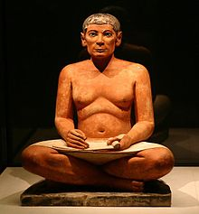

La historia es la ciencia que tiene como objeto el estudio de sucesos del pasado, tradicionalmente de la humanidad1, y como método el propio de las Ciencias Sociales/Humanas, así como el de las Ciencias Naturales en un marco de interdisciplinariedad.2 Siendo la disciplina que estudia y narra cronológicamente los acontecimientos pasados. Se denomina también «historia» al periodo que transcurre desde la aparición de la escritura hasta la actualidad, aunque es un convencionalismo ampliamente superado en la actualidad, considerando a la prehistoria también como parte intrínseca de la historia.
Más allá de las acepciones propias de la Ciencia Histórica, Ciencia de la Historia, Ciencias Históricas o Ciencias de la Historia, «historia», en el lenguaje usual, es la narración de cualquier suceso, incluso de sucesos imaginarios y de mentiras;34 sea su propósito el engaño, el placer estético o cualquier otro (ficción histórica). Por el contrario, el propósito de la ciencia histórica es averiguar los hechos y procesos que ocurrieron y se desarrollaron en el pasado e interpretarlos ateniéndose a criterios de objetividad; aunque la posibilidad de cumplimiento de tales propósitos y el grado en que sean posibles son en sí mismos objetos de estudio de la Historiología o Teoría de la Historia, como epistemología o conocimiento científico de la historia.
La palabra historia deriva del griego ἱστορία (léase historia, traducible por «investigación» o «información», conocimiento adquirido por investigación), del verbo ἱστορεῖν («investigar»). De allí pasó al latín historia, que en castellano antiguo evolucionó a estoria (como atestigua el título de la Estoria de España de Alfonso X el Sabio, 1260-1284) y se reintrodujo posteriormente en el castellano como un cultismo en su forma latina original. La palabra antigua griega ἱστορία fue usada por Aristóteles en su Περὶ τὰ ζῷα ἱστορίαι (léase Peri ta zoa jistória, latinizado Historia animalium, traducible por Historia de los animales [el título griego es plural y el latino es singular]).29 El término se derivaba de ἵστωρ (léase jístōr, traducible por «hombre sabio», «testigo» o «juez»). Se pueden encontrar usos de ἵστωρ en los himnos homéricos, Heráclito, el juramento de los efebos atenienses y en las inscripciones beocias (en un sentido legal, con un significado similar a «juez» o «testigo»). El rasgo aspirado es problemático, y no se presenta en la palabra cognata griega εἴδομαι («aparecer»). La forma ἱστορεῖν («inquirir»), es una derivación jónica, que se expandió primero en la Grecia clásica y más tarde en la civilización helenística.
La historiografía es el conjunto de técnicas y métodos propuestos para describir los hechos históricos acontecidos y registrados, entendida como la ciencia que se encarga del estudio de la historia. La correcta praxis de la historiografía requiere el empleo correcto del método histórico y el sometimiento a los requerimientos típicos del método científico. También se denomina historiografía a la producción literaria de los historiadores, y a las escuelas, agrupaciones o tendencias de los historiadores mismos. Artículo principal: Historiografía La historiología o «teoría de la historia» es el conjunto de explicaciones, métodos y teorías sobre cómo, por qué y en qué medida se dan cierto tipo de hechos históricos y tendencias sociopolíticas en determinados lugares y no en otros. El término fue introducido por José Ortega y Gasset30 y el DRAE lo define como el estudio de la estructura, leyes y condiciones de la realidad histórica.31 Artículo principal: Historiología La historia como conjunto de hechos realmente acontecidos en el pasado de la humanidad; aunque muy frecuentemente se entiendan restrictivamente como hechos históricos únicamente a los acontecimientos trascendentes, los que tienen un alcance lo suficientemente amplio como para ser útiles para la comprensión de hechos posteriores, o al menos los que son interpretados así desde la perspectiva del historiador que los destaca o considera dignos de recuerdo (memoria histórica). La selección de esos hechos es cuestión de debate, pues cada una de las interpretaciones de la historia pone el protagonismo de la historia (sujeto histórico) en uno u otro lugar, lo que determina qué datos considerar hechos relevantes. Los partidarios de una historia política, militar, cultural, o de las instituciones no coincidirán con los partidarios de una historia económica y social; oposición expresada en los términos marxistas de superestructura y estructura o el unamuniano de intrahistoria. Es imposible ignorar la polisemia y la superposición de estos tres términos, pero simplificando al máximo: la historia son los hechos del pasado; la historiografía es la ciencia de la historia; y la historiología es la epistemología o teoría de la historia.